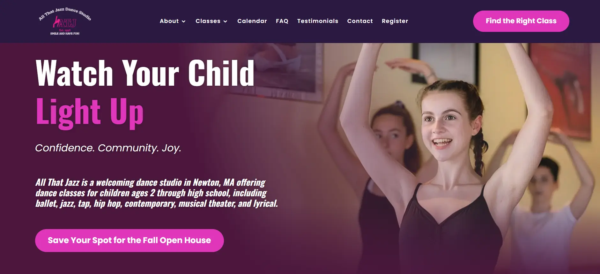
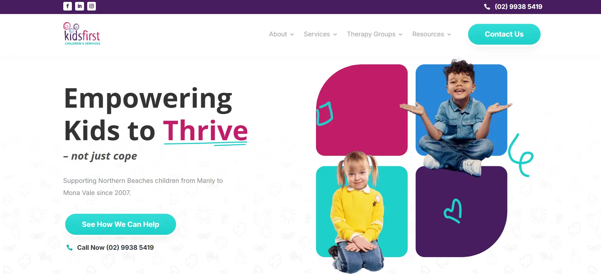
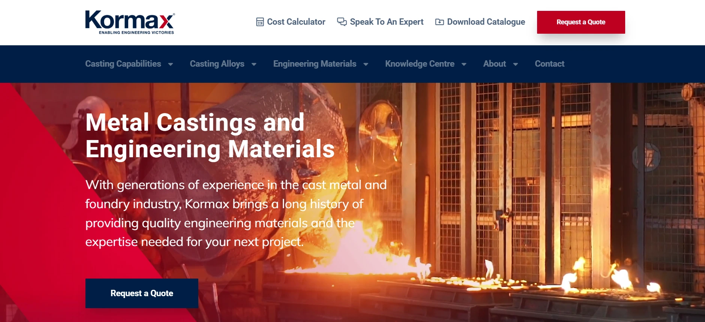
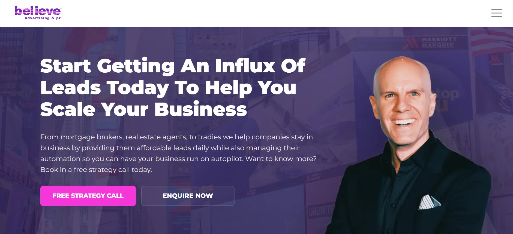
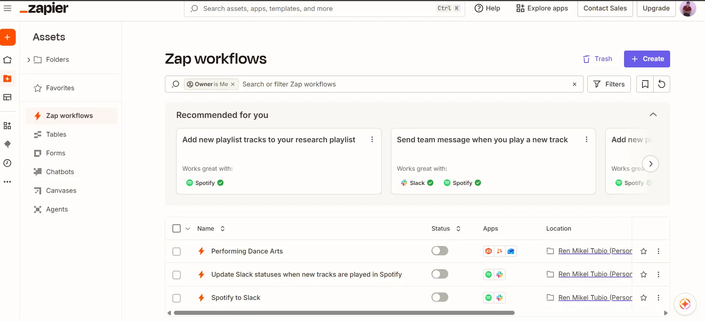
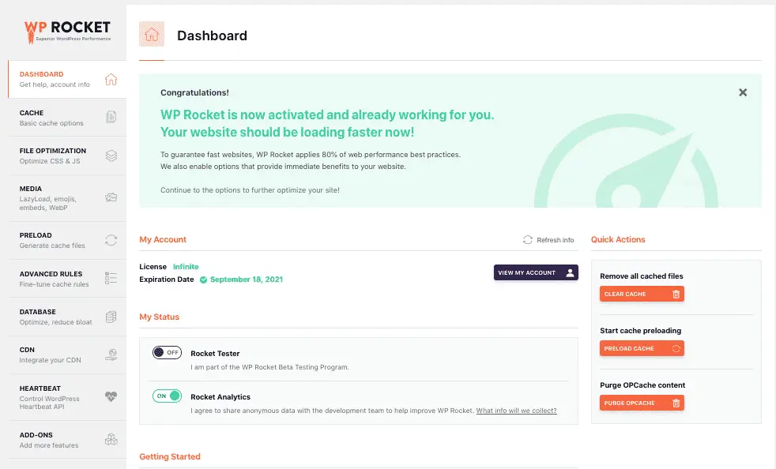

Who I Am
I am a web developer with experience in WordPress development, website maintenance, front-end customization, and business systems built with Flask, PostgreSQL, Bootstrap, and Python.
Web developer and Flask system builder
I build WordPress sites and Flask tools that make everyday business work simpler.
I work across public-facing websites and internal tools, with a focus on dependable delivery and straightforward maintenance.
I am a web developer with experience in WordPress development, website maintenance, front-end customization, and business systems built with Flask, PostgreSQL, Bootstrap, and Python.
I create responsive websites, improve website performance, and develop internal tools for inventory, POS workflows, supplier credit, audit logs, cash monitoring, and employee management.
Tools are grouped by how I use them, from building interfaces to keeping business workflows running.
Each case file connects the visible result with the business work and technical decisions behind it.
Custom business system
A Flask-based operations system for a hardware and construction supplies business. It manages inventory, sales, customers, suppliers, credit, deliveries, returns, attendance, cash, reminders, audit logs, and reporting.




WordPress development
Page building, maintenance, responsive fixes, front-end customization, plugin support, performance improvements, and technical support across client websites.
View Full Website List

Website support
Technical support covering basic SEO, PageSpeed improvements, workflow automation, CRM tasks, and troubleshooting for website and marketing operations.
A progression from hands-on WordPress support to full ownership of a business application.
R. Mikel Marketing, Siaton
Built and maintain a PostgreSQL-backed inventory, sales, customer, delivery, credit, and reporting application using Flask, SQLAlchemy, psycopg, Jinja2, JavaScript, and Bootstrap.
Sites at Scale, Inc., Dumaguete City
Maintained 100+ WordPress sites, built pages with major page builders, handled performance and integration support, and resolved 1,800+ tickets.
Sites at Scale, Inc., Dumaguete City
Supported quality assurance, plugin research, testing, troubleshooting, mockup builds, and live website maintenance.
Reach out for web development, WordPress support, maintenance, or a custom business system.
Email Ren